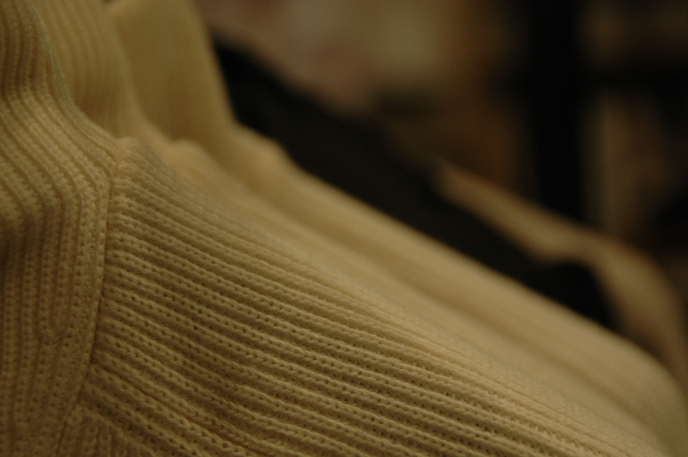
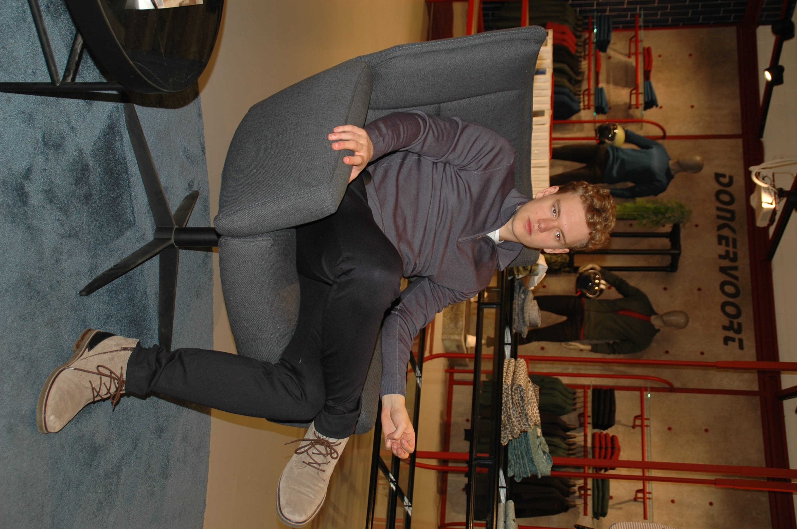

UNCEASING
100% ORGANIC COTTON T-SHIRTS
Bij Wituka zetten zij zich in voor het talent van onafhankelijke ontwerpers van over de hele wereld, met als doel het ontwerpen van een unieke collectie met kleding van de beste kwaliteit tegen een betaalbare prijs.
TOEGEWIJD AAN DE PLANEET
Zij brengen hun ontwerpen ook door naar vele andere producten die je in hun collectie terug kan vinden, zoals sweatshirts, zwemkleding, tassen, mutsen, etc.
Ze zijn allemaal gemaakt van biologisch katoen of andere duurzamen materialen zoals gerecycled polyester.
Voor elk verkochte T-shirt planten ze een boom in landen waar deforestation een probleem is. Zij zorgen ook voor dagen vol fatsoenlijke werkgelegenheden voor de lokale dorpsbewoners van de getroffen gebieden. Zij hebben al meer dan 1.300.000 bomen geplant en gezorgd voor 14.000 dagen aan werkgelegenheid.